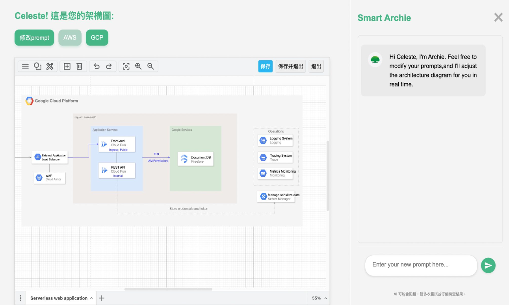
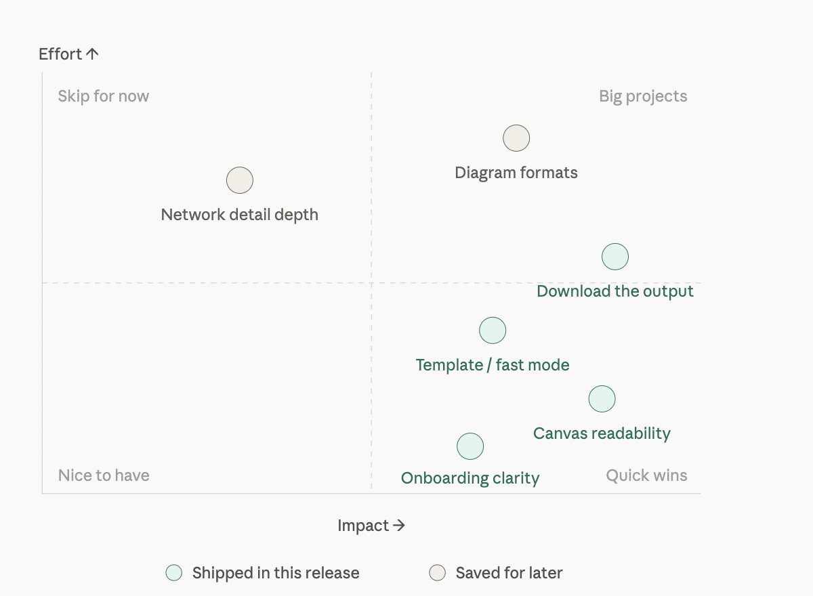
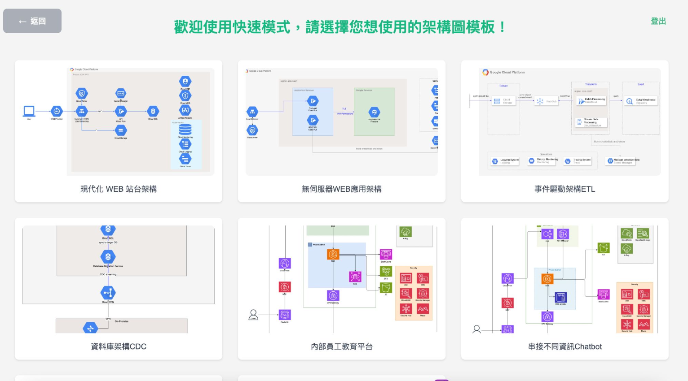
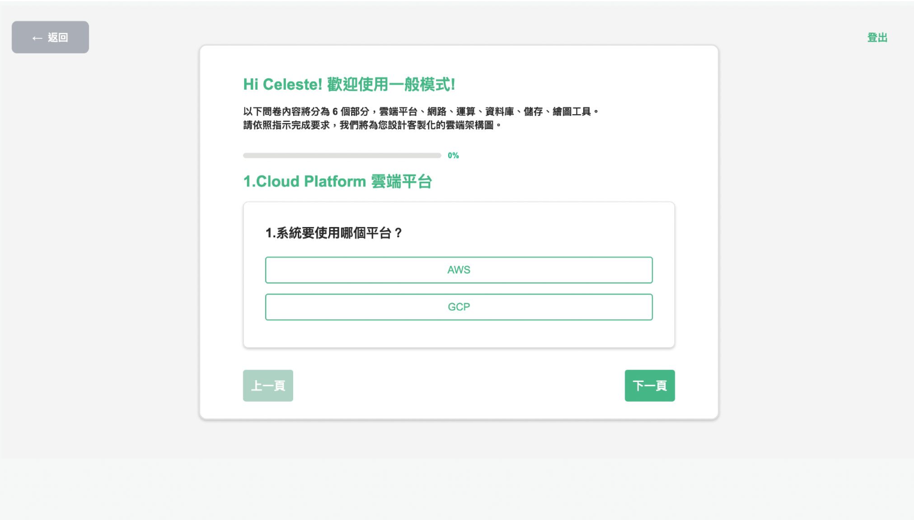
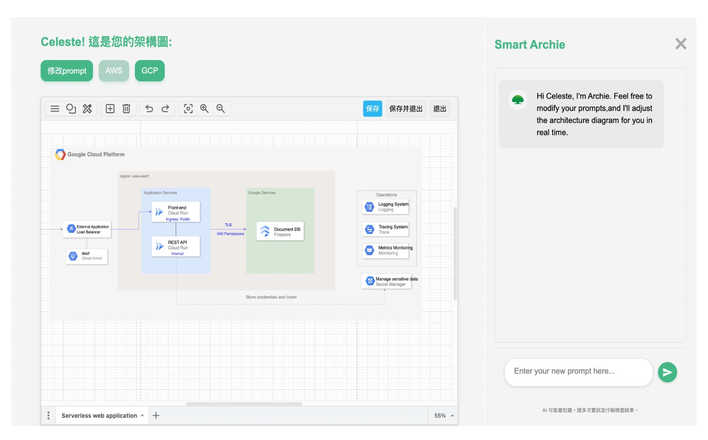
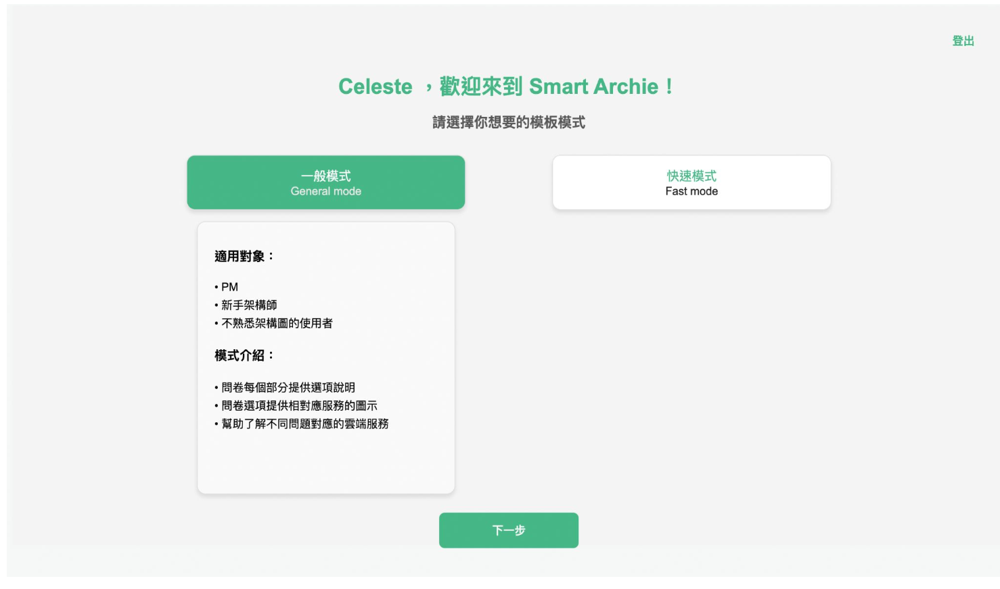

AI Product / Cloud Architecture
Smart Archie
An AI-driven cloud architecture assistant that help generate precise architecture diagrams.
Overview
What is Smart Archie?
Smart Archie is an internal AI tool built at Cathay Financial Holdings to accelerate cloud adoption across enterprise business units. As the organization embarked on a cloud migration initiative, teams needed a faster and more accessible way to translate requirements into architecture decisions, without weeks of back-and-forth between architects and business stakeholders.
The tool collects requirements through structured surveys and conversational dialogue, then automatically generates cloud architecture diagrams mapped to AWS and GCP services, reducing planning cycles into a single working session.

The main workspace — architecture diagram on the left, AI chatbot panel on the right for iterative refinement.
My Role
What I Did
Cloud Service Research
Conducted in-depth research across 45+ AWS and GCP services—documenting capabilities, pricing models, compliance certifications, and use cases relevant to financial services workloads. This became the core knowledge base powering Smart Archie's service recommendation engine.
Executive Cloud Adoption Report
Synthesized research into a structured report for senior leadership, covering service comparisons, risk assessments, and migration sequencing recommendations. The report directly shaped internal cloud adoption priorities for the following fiscal year.
Agile Sprint Participation
Joined bi-weekly Agile sprints with the cloud architecture team, contributing to backlog refinement, sprint planning, and user story definition. Maintained alignment between product requirements and technical feasibility across development cycles.
UX Research & V0.4.1 Improvements
Identified key pain points through usability testing and stakeholder interviews with non-technical users. Coordinated targeted UX fixes that shipped in the V0.4.1 product update—improving onboarding flow completion rates among first-time users.

Consolidated user interview feedback — requirements prioritized by module, requestor, and target version.
Key Features
What Smart Archie Does
Conversational Requirements Gathering
Users describe workloads and goals in plain language. Smart Archie extracts structured technical requirements through guided dialogue, removing the dependency on specialist vocabulary.

Fast mode offers pre-built templates for common cloud scenarios — an alternative entry point for users who prefer to start from a familiar pattern rather than a blank survey.
Survey-Based Validation
A structured survey ensures completeness of requirements before diagram generation, systematically catching missing information that would otherwise cause revision cycles.

Automated Diagram Generation
Maps validated requirements to AWS and GCP services and renders standards-compliant architecture diagrams—turning hours of manual drafting into near-instant output.

Iterative Refinement
Teams can adjust inputs and regenerate diagrams immediately, enabling rapid exploration of multiple architecture alternatives before committing to a migration path.

Users choose their entry mode based on intent — guided survey for new requirements, or fast mode to quickly adapt an existing template to their context.
Outcomes
Impact & Results
V0.4.1
Product update shipped with UX improvements targeting non-technical user onboarding flows
45+
AWS and GCP services researched, documented, and structured into a reusable enterprise service library
Weeks → Hours
Reduction in architecture planning cycles, from prolonged review back-and-forths to same-session diagram generation
Stack & Methods
Tools Used
- AWS
- GCP
- Figma
- Agile / Scrum
- UX Research
- Stakeholder Interviews
- Product Roadmapping
- Cloud Architecture
Note
On the Screenshots
All screenshots shown in this case study have been reviewed prior to publishing. Confidential information has been removed or obscured. The visuals reflect UI flows and research methodology only.
Next